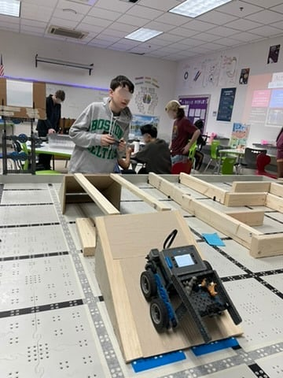
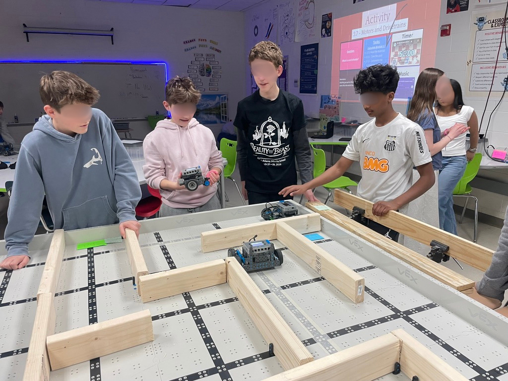
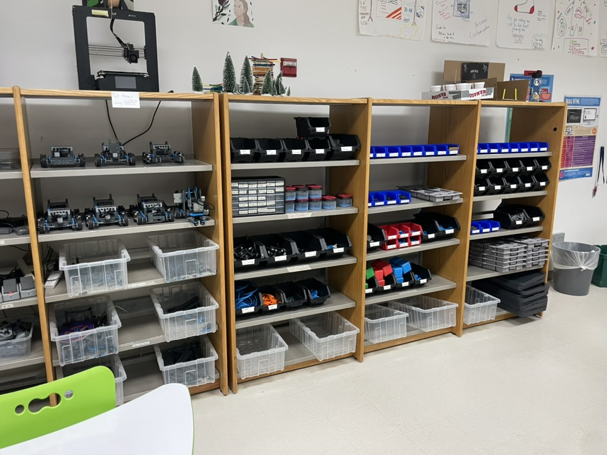
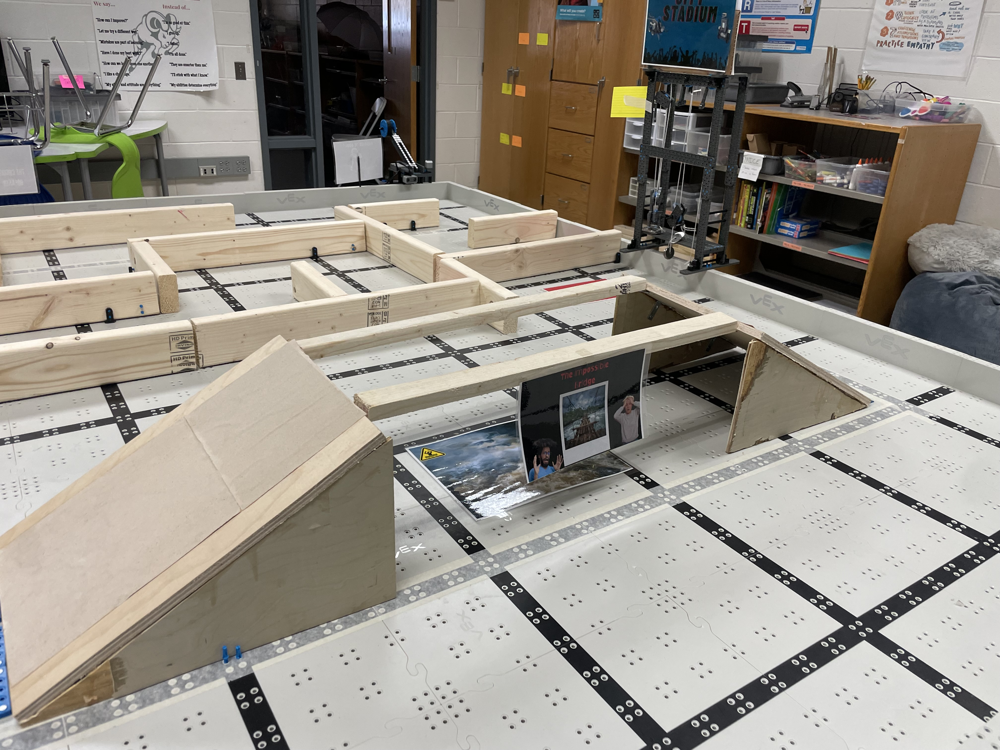
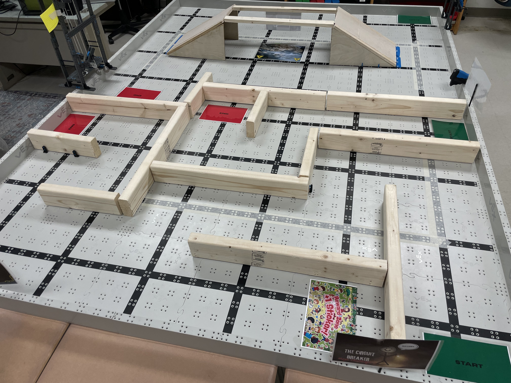

Curriculum Work
Curriculum Design
Units, systems, and classroom infrastructure I've designed to make CS learning hands-on, modular, and meaningful across grades 6–8.
Modular VEX Robotics System
When I inherited the CS program I had 30 sections a year cycling through robotics with limited kits, limited time, and students of very different experience levels. I designed a modular VEX system from scratch, standardized base robots with swappable sensor and mechanism modules, that lets a class of 24 get up and running in a single period instead of burning a week on rebuilds.
The accompanying curriculum scaffolds students from sensor basics through autonomous navigation, with challenge-based assessments (mazes, line-following, and timed tasks) that accommodate a wide range of skill levels within the same lesson. It's the kind of system design I find most rewarding, where pedagogy, materials management, and student experience have to all solve the same problem at once.





Creative Computing
A unit built around p5.js that treats code as a medium for personal expression. Students start with drawing primitives, progress through animation and interactivity, and finish with a generative self-portrait or response to a prompt of their choosing. The Care Garden installation grew directly out of this unit, once students experienced making things with code, they started asking what else we could build for the school.
The through-line: code is a language, and every language is worth learning if you have something to say.
AI & Ethics Curriculum
A unit I developed to help 6–8 graders engage critically with the AI tools already in their lives. Students investigate algorithmic bias through real case studies, build their own tiny classifiers to see how training data shapes outputs, and develop a personal rubric for evaluating when and how to use AI. We end with a class debate on a contested use case chosen by the students.
The goal isn't to make students AI enthusiasts or AI skeptics, it's to give them the vocabulary and confidence to make their own informed choices.